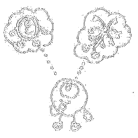

Quando machucamos ou doamos sangue, por exemplo, as células sanguíneas
perdidas devem ser repostas. Estas são células que ainda não se especializaram
em nenhum dos tipos celulares existentes no nosso corpo.

Ou seja, são capazes de se tornar e diferenciar em vários tipos de
células, como as dos músculos, ou dos ossos, ou do sangue. Elas também
são capazes de se dividir dando origem a outras idênticas a elas.